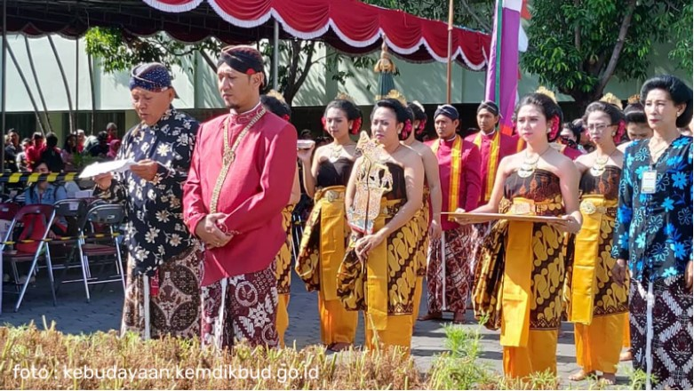
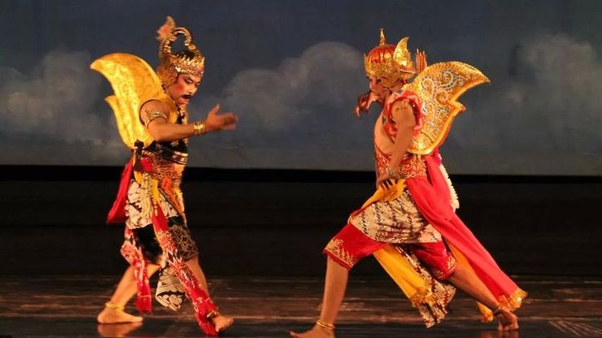
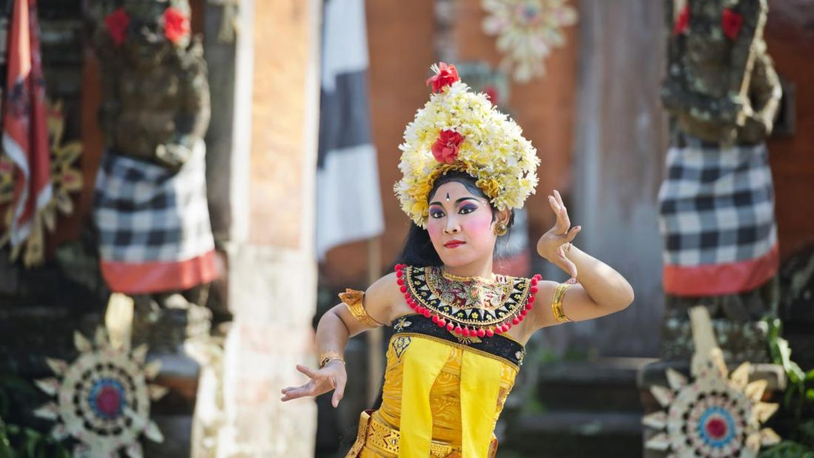

Adat Istiadat
1. Upacara Ruwatan
Upacara Ruwatan, bahasa Jawa dari “dibebaskan” atau “dilepaskan”. Masyarakat percaya bahwa Upacara Ruwatan ini dapat melepaskan seseorang dari hukuman, atau bahkan kutukan, yang akan merugikan dirinya dan mendekatkannya pada bahaya.
Tradisi
1. Wayang Wong
Wayang Wong adalah pertunjukan drama tari yang menggunakan tokoh-tokoh wayang sebagai cerita utamanya. Pertunjukan ini tidak hanya menghibur, tetapi juga mengajarkan nilai-nilai moral dan sejarah kepada penontonnya.
Seni
1. Seni Tari Tradisional
Tarian sakral yang biasanya dipentaskan di keraton, melibatkan sembilan penari perempuan dengan gerakan-gerakan yang anggun dan lembut. Tari Bedhaya menggambarkan keagungan dan keanggunan serta dianggap sebagai bentuk penghormatan terhadap dewata dan leluhur.
Bahasa
1. Bahasa Jawa
Bahasa Jawa merupakan bahasa utama yang digunakan oleh mayoritas penduduk Jawa Tengah dalam kehidupan sehari-hari. Bahasa Jawa memiliki variasi dialek yang cukup beragam tergantung dari daerahnya, seperti dialek Jawa Tengah bagian utara (termasuk Semarang), Jawa Tengah bagian selatan (termasuk Solo), Pekalongan, Pati, dan lain-lain.
Nilai-Nilai Budaya
1.Keagamaan dan Kepercayaan
Nilai-nilai keagamaan, baik dalam bentuk kepercayaan tradisional maupun agama-agama yang dianut seperti Islam, Kristen, dan Hindu, sangat mempengaruhi kehidupan sehari-hari masyarakat Jawa Tengah. Ritual-ritual keagamaan, seperti slametan, upacara adat, dan perayaan-perayaan keagamaan dihargai sebagai sarana untuk memperkuat hubungan dengan Tuhan dan memperkokoh ikatan sosial antarwarga.